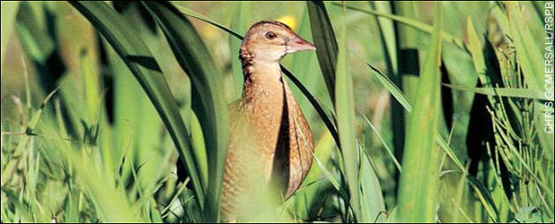

Saturday, June the 21st, 2008
back to: title, date or indexes

Corncrake. Brink of extinction. Dove-sized. Coots and moorhens. Hay meadows. Rural. Devastated. Insistent crek-crek. Scythes. Tractors. Scotland. Crofting. Rasping double call. Distinctive. Through the night. Hand-reared. Acclimatised in pens. Nene Washes. Floodplain meadows. Significant miracle. Corncrake project.
But this is a mere summary. Read all about it here.